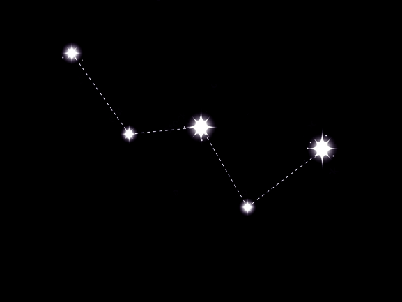

Regina Etiopiei este o constelaţie din partea nordică, vizibilă tot timpul anului dar cel mai bine în noiembrie. Regina Etiopiei a produs 2 supernove, una fiind cunoscută sub numele de Cassiopeia A şi care a explodat acum 300 de ani, explozia fiind văzută de pe Pământ. Materia eliberată după explozie a fost împinsă cu o viteză egală cu câteva procente din viteză luminii şi continuă să se extindă într-o carapace gigantică ce conţine o multitudine de elemente, inclusiv oxigen. Aceste elemente pot forma noi planete, stele sau chiar organisme vii cândva în viitor.
Cele 5 stele principale ale constelaţiei formează litera "W". Vârful este la mijlocul vestului în direcţia Stelei Nordului, aşa că este uşor de reperat pe cer.
22h 57m la 3h 41m
+47 la 78°
Alpha Cassiopeiae (Schedir)
Regele etiopian Cefeu şi soţia sa Cassiopeia au comis păcatul vanităţii. Cassiopeia a pretins că este mai frumoasă decât Nereids, zeita acvatică a mitologiei greceşti. Nereids s-a plâns lui Poseidon de această insultă şi acesta a trimis monstrul Ketos care a devastat ţărmurile ţării. Conform cu spusele unui oracol, ţara putea fi eliberată numai dacă Andromeda, singurul copil al familiei regale, ar fi fost sacrificată monstului marii. Fără milă, Andromeda a fost legată de o piatră la ţărm unde a fost nevoită să îl aştepte pe monstru să o mănânce de vie. Perseu a fost cel ce a salvat-o pe Andromeda învingând monstrul şi apoi s-a căsătorit cu faţă.
Tot anul, dar în special toamna
Andromeda, Leul, Perseu, Boarul